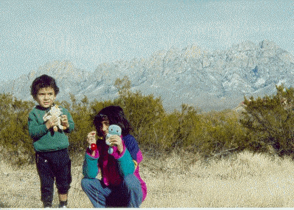
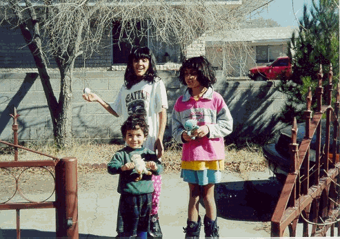
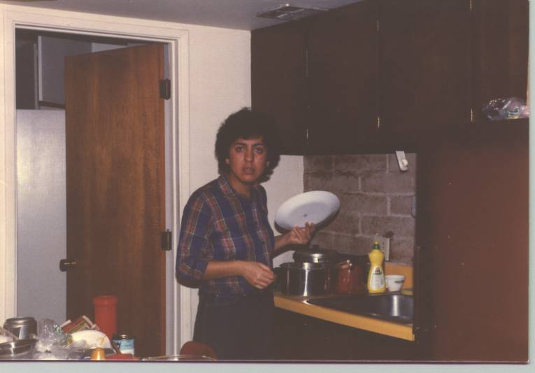
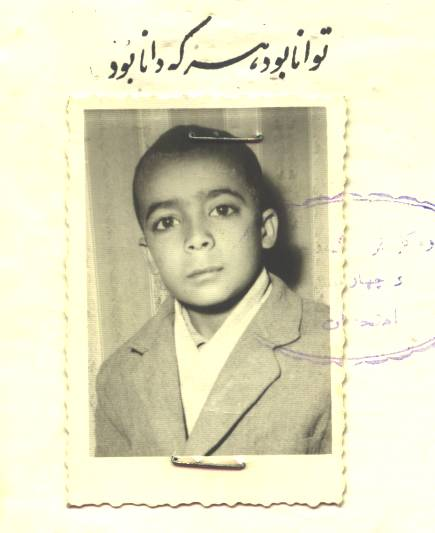
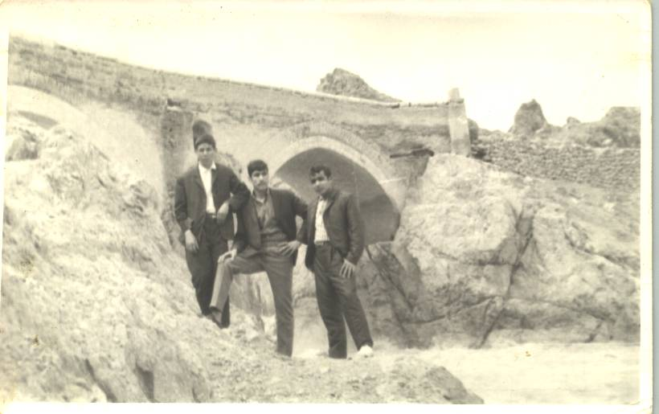
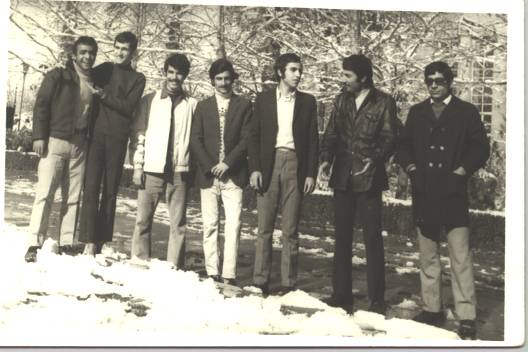
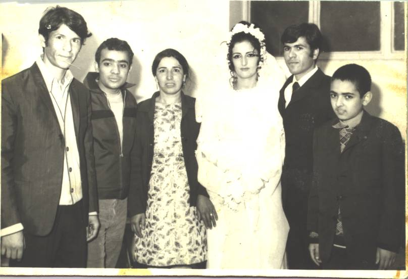
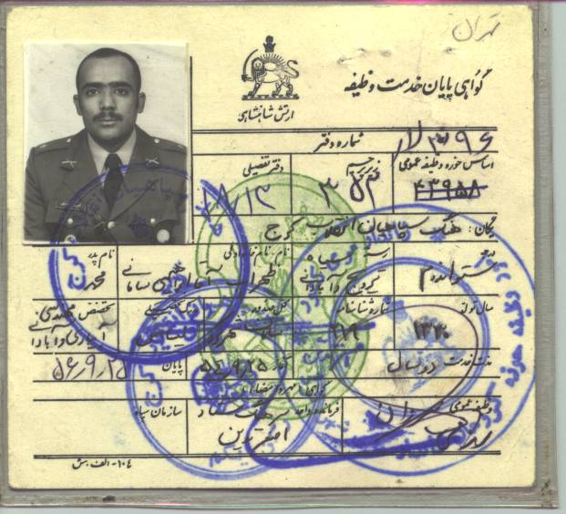

Family
Home > Family
 |
Zach and Autena behind A-Mountain (2001)
 |
Zach, Autena, Sara in front of our house in Las Cruces (2001).

Zahra, when she wants to wash the dishes.
I Used to be Young......

1962, Elementary school. At 11, I had one set of clothes and many plans

High school years (1966). From left: Cousin Behrooz, Ramazan ali yazdan panah (our neighbor and friend), and Zohrab Samani. The picture was taken in front of "Pole Zaman Khan", the historical arch bridge near our village "Saman".

1971, College years at Karadj Agricultural College. From Left: Zohrab Samani, Esmail Maghsoodi Lulemani, Khosrow Sahraneshin samani, Ghavami?, Behroooz Aframian (we used to affectionately call him the Crazy Jew), Ali Asharfi, Bijan Amiri.
(I used to be a hot head radical in those days, never imagined I would become a Yankee).

Tehran, 1971, at Cousin's wedding. From left: Cousin Behrooz, Zohrab Samani, Mother, Foroogh, Bahram and an unknown soldier.

1975-1977. Military service. Served two years in the military service of the Shah Mohammad Reza Pahlavi. The Shah was toppled in 1979. That was when our people jumped from the frying pan into fire, but that is another story.

(c) Zohrab A. Samani